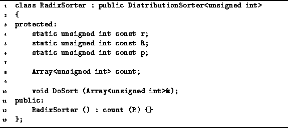
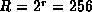
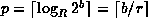
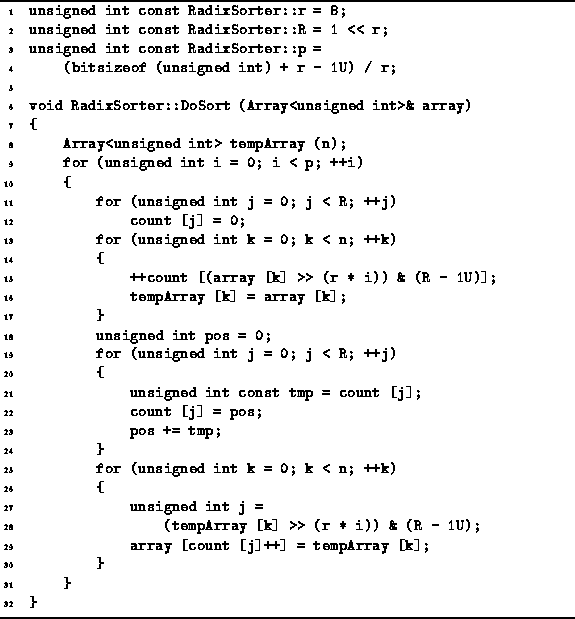
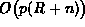

Data Structures and Algorithms
with Object-Oriented Design Patterns in C++
Data Structures and Algorithms
with Object-Oriented Design Patterns in C++
Program  gives the declaration of the RadixSorter class.
Notice that the RadixSorter class is not a template.
This radix sorter is designed to sort specifically
an array of unsigned ints.
gives the declaration of the RadixSorter class.
Notice that the RadixSorter class is not a template.
This radix sorter is designed to sort specifically
an array of unsigned ints.
Three constants are declared as static members of the
in the RadixSorter class--R, r and p.
The constant R represents the radix and  .
The constant p is the number sorting passes needed to sort the data.
.
The constant p is the number sorting passes needed to sort the data.
The RadixSorter class contains one member variable--count. The count variable is an array of unsigned integers used to implement the sorting passes. The RadixSorter constructor simply initializes the count array with length R.

Program: RadixSorter Class Definition
Program defines the constants R, r and p,
and gives the code for the DoSort member function
of the RadixSorter class.
In this case r=8 and .
Therefore, a radix-256 sort is being done.
We have chosen R as a power of two because
that way the computations required to implement the radix sort
can be implemented efficiently using simple bit shift and mask operations.
In order to sort b-bit unsigned integers,
it is necessary to make 
sorting passes.
The constants r, R and p are initialized accordingly.

Program: RadixSorter Class DoSort Member Function Definition
DoSort begins by creating a temporary array of unsigned ints of length n. Each iteration of the main loop corresponds to one pass of the radix sort (lines 9-30). In all p iterations are required.
During the  pass of the main loop
the following steps are done:
First, the R counters are all set to zero (lines 11-12).
This takes O(R) time.
Then a pass is made through the input array during which
the number of occurrences of each radix-R digit in the
pass of the main loop
the following steps are done:
First, the R counters are all set to zero (lines 11-12).
This takes O(R) time.
Then a pass is made through the input array during which
the number of occurrences of each radix-R digit in the  digit position are counted (lines 13-17).
This pass takes O(n) time.
Notice that during this pass all the input data is copied
into the temporary array.
digit position are counted (lines 13-17).
This pass takes O(n) time.
Notice that during this pass all the input data is copied
into the temporary array.
Next,
the array of counts is transformed into an array of offsets
according to Equation .
This requires a single pass through the counter array (lines 18-24).
Therefore, it takes O(R) time.
Finally, the data sequence is permuted by copying the values
from the temporary array back into the input array (lines 25-30).
Since this requires a single pass through the data arrays,
the running time is O(n).
After the p sorting passes have been done, the array of data is sorted. The running time for the DoSort routine of the RadixSorter class is . If we assume that the size of an integer is 32 bits and given that R=256, the number of sorting passes required is p=4. Therefore, the running time for the radix sort is simply O(n). I.e., radix sort is a linear-time sorting algorithm.
 Copyright © 1997 by Bruno R. Preiss, P.Eng. All rights reserved.
Copyright © 1997 by Bruno R. Preiss, P.Eng. All rights reserved.